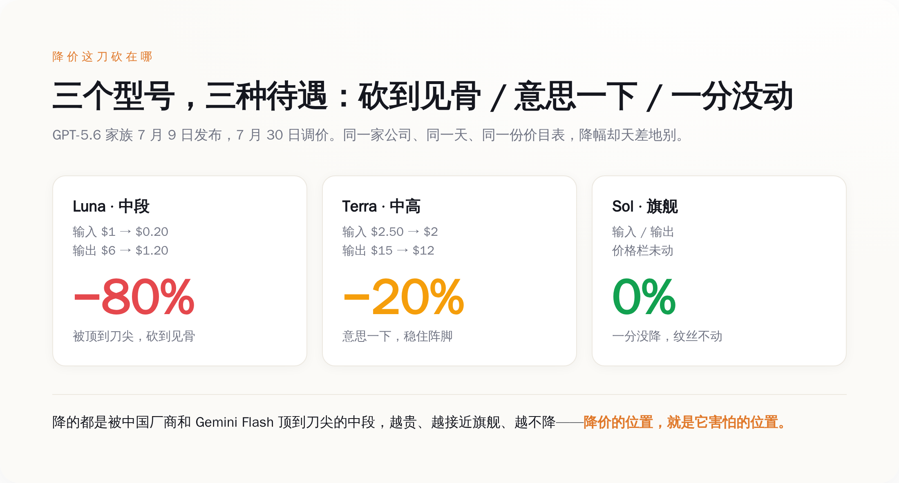
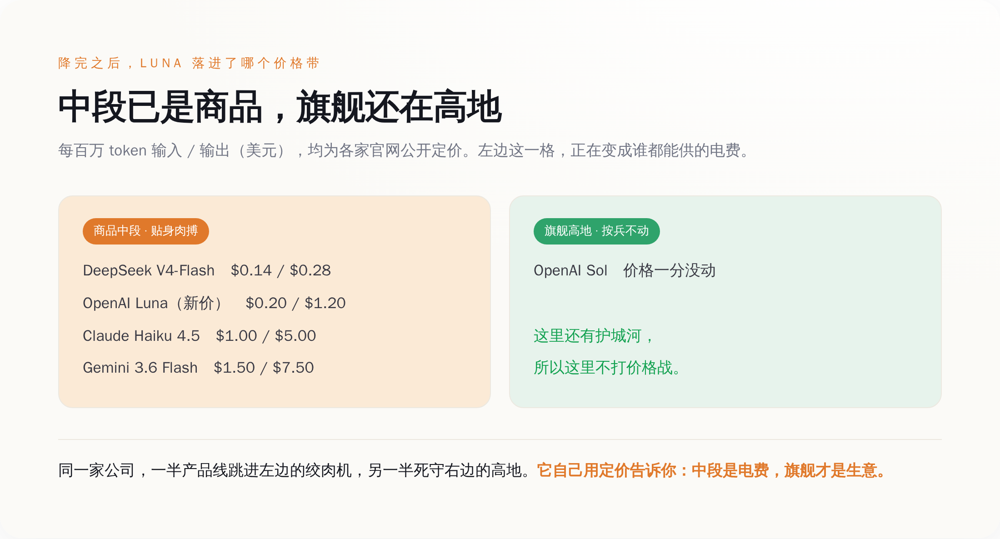
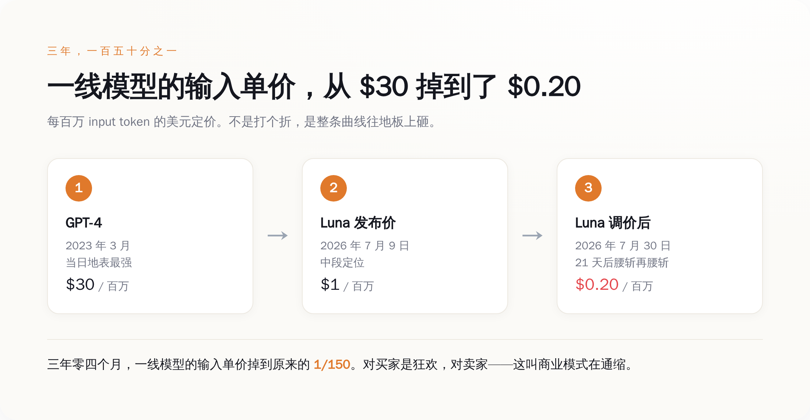

一、给三周前的新车打骨折，还只打两个
先把数字摆出来，一手的，就是 OpenAI 自己那张价目表。
GPT-5.6 家族 7 月 9 日发布。三周后的 7 月 30 日，中段的 Luna 输入价从每百万 token 的 1 美元砍到 0.2 美元，输出从 6 美元砍到 1.2 美元——输入输出双双降了 80%。中高一档的 Terra，输入从 2.5 美元降到 2 美元，输出从 15 降到 12，降了 20%，意思一下。最贵、能力最强的旗舰 Sol，价格栏纹丝不动，一分没降。
OpenAI 给的官方理由是四个字：系统效率提升（system efficiency）。
这话你听听就好。效率提升是个好东西，但它有个特点——它是慢慢来的。你说三周里工程师们优化了推理框架、上了新的量化、调了调度，我信，这能省个百分之几到百分之十几。可你要告诉我，二十一天里，同一个模型、同一批 GPU、同一套权重，服务成本降了 80%（笑）？
效率不会三周涨 80%。三周里能涨 80% 的，从来不是你机房里的东西，是你机房外面的东西——是这三周里，又有谁端着一份更便宜的菜单，站到了你客户面前。
所谓"降价 80%"，翻译成人话就是：我们发现按原价卖，客户要跑。就这。
二、降价的位置，就是害怕的位置
那客户能跑去哪儿？把别家的价目表也摆出来，一对就明白了。这些也全是一手的公开定价，谁都能去官网查。

DeepSeek 的 V4-Flash，输入每百万 token 0.14 美元，输出 0.28 美元。Google 的 Gemini 3.6 Flash，输入 1.5 美元，输出 7.5 美元。Anthropic 的 Claude Haiku 4.5，输入 1 美元，输出 5 美元。
看出来了吗。Luna 降价前的原价是 1 美元输入，而 DeepSeek 的同档货是 0.14 美元——七分之一的价。一个企业客户，一天烧几十亿 token 跑客服、跑摘要、跑批量分类，这种活儿早就不需要最聪明的脑子，只需要够用、便宜、稳定。这种场景下，7 倍的价差不是"品牌溢价"，是"客户凭什么留下"的送命题。
所以 OpenAI 把 Luna 从 1 美元砍到 0.2 美元。砍完之后，它和 DeepSeek 的 0.14 美元站到了同一条价格线上——不再是 7 倍，是 1.4 倍。这一刀砍下去，砍掉的不是利润，是"客户逃跑的理由"。

而 Sol 为什么不降？因为在旗舰这一档，DeepSeek 顶不到它的下巴，Gemini 的 Flash 更够不着。最难的推理、最长的上下文、最挑剔的活儿，暂时还是那几家顶级实验室的自留地。这里客户跑不了，所以这里不需要打折。
你把这两件事叠在一起看，答案就自己跳出来了：降价不是成本决定的，是竞争决定的。 如果真是"系统效率提升"省下来的成本，那三个型号跑在同一批基础设施上，该一起降才对。可现实是只有被顶到刀尖的中段在流血，旗舰高地滴血不出。这不是成本的逻辑，这是刺刀顶到哪儿、哪儿就割肉的逻辑。
一家公司嘴上说着"AGI 近在眼前""智能即将无限便宜"，手上却在给最好卖的产品死死守住价格、给被围攻的产品连夜割肉。嘴和手打架的时候，永远信手。
三、从 30 美元到 2 毛，三年砸掉 150 倍
把镜头拉远，这场价格战不是这三周才开打的。
2023 年 3 月，GPT-4 刚出来的时候，输入是每百万 token 30 美元，输出 60 美元。那会儿它是地表最强，是所有人排队氪金也要用的东西，贵得理直气壮。
今天，Luna 降完价，输入 0.2 美元。而 0.2 美元今天买到的这颗脑子，比 2023 年那个 30 美元的 GPT-4 强得多——更别说 DeepSeek 那 0.14 美元的货，随便一项能力都能把三年前的"地表最强"摁在地上。

三年零四个月，输入单价从 30 掉到 0.2，是原来的一百五十分之一。这个速度，比摩尔定律凶残得多。摩尔定律是每两年翻一番，这玩意儿是每年往地板上砸一个数量级。
对用 AI 的人来说，这是天大的好事——三年前要养一支团队、砸一笔预算才敢碰的能力，今天两毛钱调个 API 就有了。狂欢，应该的。
可你换到卖 AI 的人那一头站站看。你花了几百亿美元、烧了几万张卡、挖了全世界最贵的一批脑子，做出来一个产品。这个产品最核心的那个计量单位——token——的单价，正在以每年一个数量级的速度往下掉。你越努力把模型做好，客户越是发现"其实用便宜的那个也够了"。你辛辛苦苦爬技术树，脚下的定价地板却在塌。
这就是这轮降价背后那件真正冷的事：token 正在变成电费。
四、电费上，长不出 AGI 的利润
"智能太便宜以至于不用计量"（intelligence too cheap to meter），这句话被无数 PPT 引用过，当成 AI 乌托邦的号角。它化用的原型是 1950 年代对核电的那句"电力太便宜不用计量"。
引用的人只记得前半句的浪漫，忘了后半句的现实：核电确实没便宜到那个份上，但电这个东西，最后真的变成了商品——它便宜、它管够、它无处不在，然后，它赚不到什么钱。全世界没有谁靠"卖电"这件事本身成为下一个垄断巨头，因为电是标准品，你的一度电和我的一度电没有区别，客户只认价格。
token 正在走上同一条路。当中段模型的能力大家都够用、价格都贴着地板、接口都能随时切换，它就退化成了电——一种谁都能供、随时能换供应商的公用事业。而公用事业这门生意的特点是：规模巨大、极其重要、利润稀薄。你能建成一座电厂，但你建不成一个印钞机。
这才是 OpenAI 那三种降价力度真正的分量。它不是随手调了个价，它是在自己的产品线上，亲手划出了那条"电费"和"生意"的分界线：
Luna 和 Terra，被推过了线，成了电——所以要跟 DeepSeek 们贴着地板肉搏。Sol 还守在线的另一边，是暂时还能收溢价的"智能"，是护城河还没被填平的高地——所以它一分不降。哪天 Sol 也扛不住、也开始跟着降了，那就说明连旗舰这块高地也守不住了，整个行业的天花板会跟着往下压一层。
所以下次再看到"AI 又降价了""用 AI 成本又低了"这种标题，别只顾着高兴。作为买家，你该学会的一课是：中段 token 已经是电，别再为"我用的是某某大厂"这五个字付溢价，能用 0.14 的活儿就别付 1 块——它们干的活儿真的差不多。作为看行业的人，你该盯的也不是"降了百分之几"，而是那个最贵的旗舰型号，今天降没降。
旗舰不降，说明护城河还在，故事还能讲。旗舰哪天也跟着降了——那才是真正该后背发凉的一天。
价目表不会说谎。谁被砍、谁没被砍，比任何一场发布会都诚实。